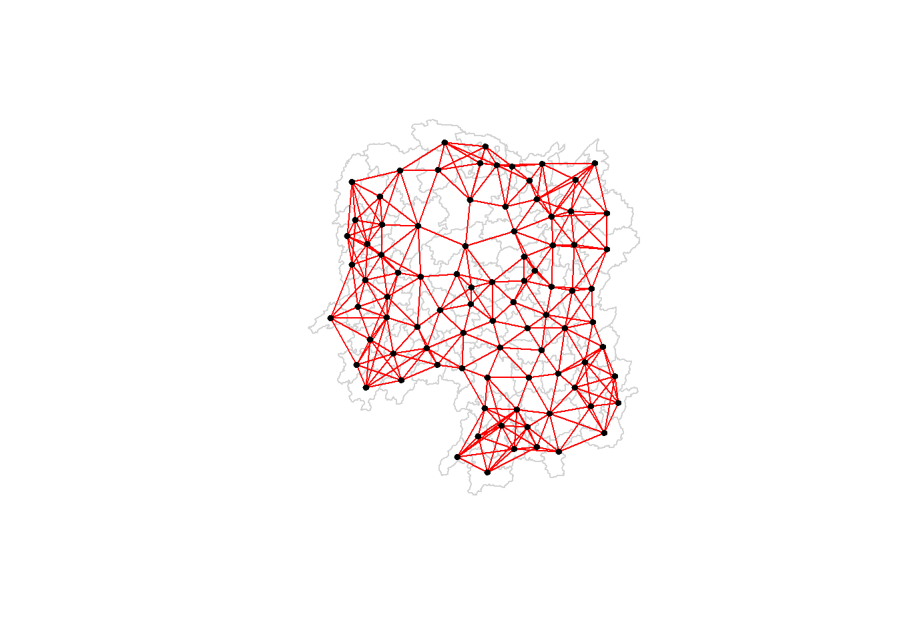

pacman::p_load(sf, spdep, tmap, tidyverse, knitr)Hands-on-Exercise 5: Spatial Weights and Applications
1.0 Introduction
Focus on:
Tobler’s First law of Geography
Principles of Spatial Autocorrelation
Concepts of Spatial Proximity and Spatial Weights
Contiguity-Based Spatial Weights: Rook’s & Queen’s
Distance-Band Spatial Weights: fixed and adaptive
Applications of Spatial Weights
Spatially Lagged Variables
Geographically Weighted Summary Statistics
2.0 Importing Packages
sf: import geospatial data
readr: import csv file (tidyverse package)
dplyr: perform relational join
spdep: compute spatial weights, calculate spatially lagged variables
tmap: plotting and visualisation
knitr:
3.0 Importing Datasets into Environment
geospatial (boundary data)
hunan_sf <- st_read(dsn = "data/geospatial", layer = "Hunan")Reading layer `Hunan' from data source `C:\marcus159260\IS415-GAA\hands-on-exercises\Hands-on_Ex05\data\geospatial' using driver `ESRI Shapefile' Simple feature collection with 88 features and 7 fields Geometry type: POLYGON Dimension: XY Bounding box: xmin: 108.7831 ymin: 24.6342 xmax: 114.2544 ymax: 30.12812 Geodetic CRS: WGS 84aspatial
hunan2012_sf <- read_csv("data/aspatial/Hunan_2012.csv")Rows: 88 Columns: 29 ── Column specification ──────────────────────────────────────────────────────── Delimiter: "," chr (2): County, City dbl (27): avg_wage, deposite, FAI, Gov_Rev, Gov_Exp, GDP, GDPPC, GIO, Loan, ... ℹ Use `spec()` to retrieve the full column specification for this data. ℹ Specify the column types or set `show_col_types = FALSE` to quiet this message.hunan2012_sf# A tibble: 88 × 29 County City avg_wage deposite FAI Gov_Rev Gov_Exp GDP GDPPC GIO <chr> <chr> <dbl> <dbl> <dbl> <dbl> <dbl> <dbl> <dbl> <dbl> 1 Anhua Yiyang 30544 10967 6832. 457. 2703 13225 14567 9277. 2 Anren Chenz… 28058 4599. 6386. 221. 1455. 4941. 12761 4189. 3 Anxiang Chang… 31935 5517. 3541 244. 1780. 12482 23667 5109. 4 Baojing Hunan… 30843 2250 1005. 193. 1379. 4088. 14563 3624. 5 Chaling Zhuzh… 31251 8241. 6508. 620. 1947 11585 20078 9158. 6 Changning Hengy… 28518 10860 7920 770. 2632. 19886 24418 37392 7 Changsha Chang… 54540 24332 33624 5350 7886. 88009 88656 51361 8 Chengbu Shaoy… 28597 2581. 1922. 161. 1192. 2570. 10132 1681. 9 Chenxi Huaih… 33580 4990 5818. 460. 1724. 7755. 17026 6644. 10 Cili Zhang… 33099 8117. 4498. 500. 2306. 11378 18714 5843. # ℹ 78 more rows # ℹ 19 more variables: Loan <dbl>, NIPCR <dbl>, Bed <dbl>, Emp <dbl>, # EmpR <dbl>, EmpRT <dbl>, Pri_Stu <dbl>, Sec_Stu <dbl>, Household <dbl>, # Household_R <dbl>, NOIP <dbl>, Pop_R <dbl>, RSCG <dbl>, Pop_T <dbl>, # Agri <dbl>, Service <dbl>, Disp_Inc <dbl>, RORP <dbl>, ROREmp <dbl>
4.0 Projection Transformation
st_crs(hunan_sf)Coordinate Reference System:
User input: WGS 84
wkt:
GEOGCRS["WGS 84",
DATUM["World Geodetic System 1984",
ELLIPSOID["WGS 84",6378137,298.257223563,
LENGTHUNIT["metre",1]]],
PRIMEM["Greenwich",0,
ANGLEUNIT["degree",0.0174532925199433]],
CS[ellipsoidal,2],
AXIS["latitude",north,
ORDER[1],
ANGLEUNIT["degree",0.0174532925199433]],
AXIS["longitude",east,
ORDER[2],
ANGLEUNIT["degree",0.0174532925199433]],
ID["EPSG",4326]]st_crs(hunan2012_sf)Coordinate Reference System: NA5.0 Data Wrangling
Perform Relational Join
- left_join (from dplyr package) to join by same column (County)
hunan <- left_join(hunan_sf, hunan2012_sf, join_by(County)) %>%
select(1:4, 7, 15)
#how do i know to pick column 15? if i were to pick 8 (last column), there will be:
#Error: Fill argument neither colors nor valid variable name(s)
#pick 6 columns (1:4, 7, 15) gives back 7 columns? (GDPPC)6.0 Exploratory Spatial Data Analysis
Visualising Regional Development Indicator
- through basemap and choropleth map , to show distribution of GDPPC 2012 by using qtm() of tmap package.
basemap <- tm_shape(hunan) +
tm_polygons() +
tm_text("NAME_3", size=0.4)
gdppc <- qtm(hunan, "GDPPC", fill.palette = "plasma")
tmap_arrange(basemap, gdppc, asp=1, ncol=2)7.0 Computing Contiguity Spatial Weights
use poly2nb (from spdep package) to compute contiguity weight matrices for the study area
poly2nb accepts arguement (queen), which sets boolean (TRUE or FALSE), identifying neighbouring regions.
default: queen = TRUE, will generate list of first-order neighbours
7.1 Computing QUEEN contiguity-based neighbours
- weight matrices
wm_q <- poly2nb(hunan, queen=TRUE)
summary(wm_q)Neighbour list object:
Number of regions: 88
Number of nonzero links: 448
Percentage nonzero weights: 5.785124
Average number of links: 5.090909
Link number distribution:
1 2 3 4 5 6 7 8 9 11
2 2 12 16 24 14 11 4 2 1
2 least connected regions:
30 65 with 1 link
1 most connected region:
85 with 11 linksregions = area units
(polygon id) 85 is polygon 85 has 11 connected neighbours
(polygon id) 30 and 65: has 1 connected regions (the least)
See connected neighbours of first polygon object
- Polygon 1 has 5 neighbours
wm_q[[1]][1] 2 3 4 57 85- County name of Polygon 1
hunan$County[1][1] "Anxiang"- County names of connected neighbours of Polygon 1
hunan$NAME_3[wm_q[[1]]][1] "Hanshou" "Jinshi" "Li" "Nan" "Taoyuan"#or just copy the column numbers from above # hunan$NAME_3[c(2,3,4,57,85)]- GDPCC of the 5 neighbours
GDPCC_poly1 = hunan$GDPPC[wm_q[[1]]] GDPCC_poly1[1] 20981 34592 24473 21311 22879display complete weight matrix, using str() function
- to see the connected neighbours of all 88 polygons
str(wm_q)List of 88 $ : int [1:5] 2 3 4 57 85 $ : int [1:5] 1 57 58 78 85 $ : int [1:4] 1 4 5 85 $ : int [1:4] 1 3 5 6 $ : int [1:4] 3 4 6 85 $ : int [1:5] 4 5 69 75 85 $ : int [1:4] 67 71 74 84 $ : int [1:7] 9 46 47 56 78 80 86 $ : int [1:6] 8 66 68 78 84 86 $ : int [1:8] 16 17 19 20 22 70 72 73 $ : int [1:3] 14 17 72 $ : int [1:5] 13 60 61 63 83 $ : int [1:4] 12 15 60 83 $ : int [1:3] 11 15 17 $ : int [1:4] 13 14 17 83 $ : int [1:5] 10 17 22 72 83 $ : int [1:7] 10 11 14 15 16 72 83 $ : int [1:5] 20 22 23 77 83 $ : int [1:6] 10 20 21 73 74 86 $ : int [1:7] 10 18 19 21 22 23 82 $ : int [1:5] 19 20 35 82 86 $ : int [1:5] 10 16 18 20 83 $ : int [1:7] 18 20 38 41 77 79 82 $ : int [1:5] 25 28 31 32 54 $ : int [1:5] 24 28 31 33 81 $ : int [1:4] 27 33 42 81 $ : int [1:3] 26 29 42 $ : int [1:5] 24 25 33 49 54 $ : int [1:3] 27 37 42 $ : int 33 $ : int [1:8] 24 25 32 36 39 40 56 81 $ : int [1:8] 24 31 50 54 55 56 75 85 $ : int [1:5] 25 26 28 30 81 $ : int [1:3] 36 45 80 $ : int [1:6] 21 41 47 80 82 86 $ : int [1:6] 31 34 40 45 56 80 $ : int [1:4] 29 42 43 44 $ : int [1:4] 23 44 77 79 $ : int [1:5] 31 40 42 43 81 $ : int [1:6] 31 36 39 43 45 79 $ : int [1:6] 23 35 45 79 80 82 $ : int [1:7] 26 27 29 37 39 43 81 $ : int [1:6] 37 39 40 42 44 79 $ : int [1:4] 37 38 43 79 $ : int [1:6] 34 36 40 41 79 80 $ : int [1:3] 8 47 86 $ : int [1:5] 8 35 46 80 86 $ : int [1:5] 50 51 52 53 55 $ : int [1:4] 28 51 52 54 $ : int [1:5] 32 48 52 54 55 $ : int [1:3] 48 49 52 $ : int [1:5] 48 49 50 51 54 $ : int [1:3] 48 55 75 $ : int [1:6] 24 28 32 49 50 52 $ : int [1:5] 32 48 50 53 75 $ : int [1:7] 8 31 32 36 78 80 85 $ : int [1:6] 1 2 58 64 76 85 $ : int [1:5] 2 57 68 76 78 $ : int [1:4] 60 61 87 88 $ : int [1:4] 12 13 59 61 $ : int [1:7] 12 59 60 62 63 77 87 $ : int [1:3] 61 77 87 $ : int [1:4] 12 61 77 83 $ : int [1:2] 57 76 $ : int 76 $ : int [1:5] 9 67 68 76 84 $ : int [1:4] 7 66 76 84 $ : int [1:5] 9 58 66 76 78 $ : int [1:3] 6 75 85 $ : int [1:3] 10 72 73 $ : int [1:3] 7 73 74 $ : int [1:5] 10 11 16 17 70 $ : int [1:5] 10 19 70 71 74 $ : int [1:6] 7 19 71 73 84 86 $ : int [1:6] 6 32 53 55 69 85 $ : int [1:7] 57 58 64 65 66 67 68 $ : int [1:7] 18 23 38 61 62 63 83 $ : int [1:7] 2 8 9 56 58 68 85 $ : int [1:7] 23 38 40 41 43 44 45 $ : int [1:8] 8 34 35 36 41 45 47 56 $ : int [1:6] 25 26 31 33 39 42 $ : int [1:5] 20 21 23 35 41 $ : int [1:9] 12 13 15 16 17 18 22 63 77 $ : int [1:6] 7 9 66 67 74 86 $ : int [1:11] 1 2 3 5 6 32 56 57 69 75 ... $ : int [1:9] 8 9 19 21 35 46 47 74 84 $ : int [1:4] 59 61 62 88 $ : int [1:2] 59 87 - attr(*, "class")= chr "nb" - attr(*, "region.id")= chr [1:88] "1" "2" "3" "4" ... - attr(*, "call")= language poly2nb(pl = hunan, queen = TRUE) - attr(*, "type")= chr "queen" - attr(*, "snap")= num 9e-08 - attr(*, "sym")= logi TRUE - attr(*, "ncomp")=List of 2 ..$ nc : int 1 ..$ comp.id: int [1:88] 1 1 1 1 1 1 1 1 1 1 ...7.2 Computing ROOK contiguity-based neighbours
- use wm_r to create another set of neighbours
wm_r <- poly2nb(hunan, queen=FALSE) summary(wm_r)Neighbour list object: Number of regions: 88 Number of nonzero links: 440 Percentage nonzero weights: 5.681818 Average number of links: 5 Link number distribution: 1 2 3 4 5 6 7 8 9 10 2 2 12 20 21 14 11 3 2 1 2 least connected regions: 30 65 with 1 link 1 most connected region: 85 with 10 links7.3 Visualising Contiguity Weights
- longitude
longitude <- map_dbl(hunan$geometry, ~st_centroid(.x)[[1]])- latitude
latitude <- map_dbl(hunan$geometry, ~st_centroid(.x)[[2]])cbind
- extract and bind coordinates of the centroid of each area unit
coords <- cbind(longitude, latitude)head(coords)longitude latitude [1,] 112.1531 29.44362 [2,] 112.0372 28.86489 [3,] 111.8917 29.47107 [4,] 111.7031 29.74499 [5,] 111.6138 29.49258 [6,] 111.0341 29.798637.3.1 Plotting QUEEN contiguity based neighbours map
plot(hunan$geometry, border="lightgrey") plot(wm_q, coords, pch = 19, cex = 0.6, add = TRUE, col= "grey")7.3.2 Plotting ROOK contiguity based neighbours map
plot(hunan$geometry, border="lightgrey") plot(wm_r, coords, pch = 19, cex = 0.6, add = TRUE, col = "grey")7.3.3 Plotting QUEEN and ROOK contiguity based neighbours map
par(mar = c(0,0,1,0),mfrow=c(1,2)) plot(hunan$geometry, border="lightgrey", main="Queen Contiguity") plot(wm_q, coords, pch = 19, cex = 0.6, add = TRUE, col= "grey") plot(hunan$geometry, border="lightgrey", main="Rook Contiguity") plot(wm_r, coords, pch = 19, cex = 0.6, add = TRUE, col = "grey")
8.0 Computing Distance Based Neighbours
Derive distance-based weight matrices using dnearneigh() from spdep package
The function identifies neighbours of region points by Euclidean distance with a distance band with lower d1= and upper d2= bounds controlled by the bounds= argument. If unprojected coordinates are used and either specified in the coordinates object x or with x as a two column matrix and longlat=TRUE, great circle distances in km will be calculated assuming the WGS84 reference ellipsoid.
8.1 Determine Cut-Off Distance
We need to determine the upper limit for the distance band:
Return a matrix with the indices of points belonging to the set of the k nearest neighbours of each other by using knearneigh() of spdep.
Convert the knn object returned by knearneigh() into a neighbours list of class nb with a list of integer vectors containing neighbour region number ids by using knn2nb().
Return the length of neighbour relationship edges by using nbdists() of spdep. The function returns in the units of the coordinates if the coordinates are projected, in km otherwise.
Remove the list structure of the returned object by using unlist().
#coords <- coordinates(hunan) k1 <- knn2nb(knearneigh(coords))Warning in knn2nb(knearneigh(coords)): neighbour object has 25 sub-graphsk1dists <- unlist(nbdists(k1, coords, longlat = TRUE)) summary(k1dists)Min. 1st Qu. Median Mean 3rd Qu. Max. 24.79 32.57 38.01 39.07 44.52 61.798.2 Computing Fixed Distance weight matrix
Compute the distance weight matrix using dnearneigh()
wm_d62 <- dnearneigh(coords, 0, 62, longlat = TRUE) wm_d62Neighbour list object: Number of regions: 88 Number of nonzero links: 324 Percentage nonzero weights: 4.183884 Average number of links: 3.681818Quiz: What is the meaning of “Average number of links: 3.681818” shown above?
- It means within a distance range of 0-62km, each region has 3-4 (3.68) neighboring regions.
Display the content of wm_62 matrix using str()
str(wm_d62)List of 88 $ : int [1:5] 3 4 5 57 64 $ : int [1:4] 57 58 78 85 $ : int [1:4] 1 4 5 57 $ : int [1:3] 1 3 5 $ : int [1:4] 1 3 4 85 $ : int 69 $ : int [1:2] 67 84 $ : int [1:4] 9 46 47 78 $ : int [1:4] 8 46 68 84 $ : int [1:4] 16 22 70 72 $ : int [1:3] 14 17 72 $ : int [1:5] 13 60 61 63 83 $ : int [1:4] 12 15 60 83 $ : int [1:2] 11 17 $ : int 13 $ : int [1:4] 10 17 22 83 $ : int [1:3] 11 14 16 $ : int [1:3] 20 22 63 $ : int [1:5] 20 21 73 74 82 $ : int [1:5] 18 19 21 22 82 $ : int [1:6] 19 20 35 74 82 86 $ : int [1:4] 10 16 18 20 $ : int [1:3] 41 77 82 $ : int [1:4] 25 28 31 54 $ : int [1:4] 24 28 33 81 $ : int [1:4] 27 33 42 81 $ : int [1:2] 26 29 $ : int [1:6] 24 25 33 49 52 54 $ : int [1:2] 27 37 $ : int 33 $ : int [1:2] 24 36 $ : int 50 $ : int [1:5] 25 26 28 30 81 $ : int [1:3] 36 45 80 $ : int [1:6] 21 41 46 47 80 82 $ : int [1:5] 31 34 45 56 80 $ : int [1:2] 29 42 $ : int [1:3] 44 77 79 $ : int [1:4] 40 42 43 81 $ : int [1:3] 39 45 79 $ : int [1:5] 23 35 45 79 82 $ : int [1:5] 26 37 39 43 81 $ : int [1:3] 39 42 44 $ : int [1:2] 38 43 $ : int [1:6] 34 36 40 41 79 80 $ : int [1:5] 8 9 35 47 86 $ : int [1:5] 8 35 46 80 86 $ : int [1:5] 50 51 52 53 55 $ : int [1:4] 28 51 52 54 $ : int [1:6] 32 48 51 52 54 55 $ : int [1:4] 48 49 50 52 $ : int [1:6] 28 48 49 50 51 54 $ : int [1:2] 48 55 $ : int [1:5] 24 28 49 50 52 $ : int [1:4] 48 50 53 75 $ : int 36 $ : int [1:5] 1 2 3 58 64 $ : int [1:5] 2 57 64 66 68 $ : int [1:3] 60 87 88 $ : int [1:4] 12 13 59 61 $ : int [1:5] 12 60 62 63 87 $ : int [1:4] 61 63 77 87 $ : int [1:5] 12 18 61 62 83 $ : int [1:4] 1 57 58 76 $ : int 76 $ : int [1:5] 58 67 68 76 84 $ : int [1:2] 7 66 $ : int [1:4] 9 58 66 84 $ : int [1:2] 6 75 $ : int [1:3] 10 72 73 $ : int [1:2] 73 74 $ : int [1:3] 10 11 70 $ : int [1:4] 19 70 71 74 $ : int [1:5] 19 21 71 73 86 $ : int [1:2] 55 69 $ : int [1:3] 64 65 66 $ : int [1:3] 23 38 62 $ : int [1:2] 2 8 $ : int [1:4] 38 40 41 45 $ : int [1:5] 34 35 36 45 47 $ : int [1:5] 25 26 33 39 42 $ : int [1:6] 19 20 21 23 35 41 $ : int [1:4] 12 13 16 63 $ : int [1:4] 7 9 66 68 $ : int [1:2] 2 5 $ : int [1:4] 21 46 47 74 $ : int [1:4] 59 61 62 88 $ : int [1:2] 59 87 - attr(*, "class")= chr "nb" - attr(*, "region.id")= chr [1:88] "1" "2" "3" "4" ... - attr(*, "call")= language dnearneigh(x = coords, d1 = 0, d2 = 62, longlat = TRUE) - attr(*, "dnn")= num [1:2] 0 62 - attr(*, "bounds")= chr [1:2] "GE" "LE" - attr(*, "nbtype")= chr "distance" - attr(*, "sym")= logi TRUE - attr(*, "ncomp")=List of 2 ..$ nc : int 1 ..$ comp.id: int [1:88] 1 1 1 1 1 1 1 1 1 1 ...Another way to display the structure of the weight matrix is to combine table() and card() of spdep.
table(hunan$County, card(wm_d62))1 2 3 4 5 6 Anhua 1 0 0 0 0 0 Anren 0 0 0 1 0 0 Anxiang 0 0 0 0 1 0 Baojing 0 0 0 0 1 0 Chaling 0 0 1 0 0 0 Changning 0 0 1 0 0 0 Changsha 0 0 0 1 0 0 Chengbu 0 1 0 0 0 0 Chenxi 0 0 0 1 0 0 Cili 0 1 0 0 0 0 Dao 0 0 0 1 0 0 Dongan 0 0 1 0 0 0 Dongkou 0 0 0 1 0 0 Fenghuang 0 0 0 1 0 0 Guidong 0 0 1 0 0 0 Guiyang 0 0 0 1 0 0 Guzhang 0 0 0 0 0 1 Hanshou 0 0 0 1 0 0 Hengdong 0 0 0 0 1 0 Hengnan 0 0 0 0 1 0 Hengshan 0 0 0 0 0 1 Hengyang 0 0 0 0 0 1 Hongjiang 0 0 0 0 1 0 Huarong 0 0 0 1 0 0 Huayuan 0 0 0 1 0 0 Huitong 0 0 0 1 0 0 Jiahe 0 0 0 0 1 0 Jianghua 0 0 1 0 0 0 Jiangyong 0 1 0 0 0 0 Jingzhou 0 1 0 0 0 0 Jinshi 0 0 0 1 0 0 Jishou 0 0 0 0 0 1 Lanshan 0 0 0 1 0 0 Leiyang 0 0 0 1 0 0 Lengshuijiang 0 0 1 0 0 0 Li 0 0 1 0 0 0 Lianyuan 0 0 0 0 1 0 Liling 0 1 0 0 0 0 Linli 0 0 0 1 0 0 Linwu 0 0 0 1 0 0 Linxiang 1 0 0 0 0 0 Liuyang 0 1 0 0 0 0 Longhui 0 0 1 0 0 0 Longshan 0 1 0 0 0 0 Luxi 0 0 0 0 1 0 Mayang 0 0 0 0 0 1 Miluo 0 0 0 0 1 0 Nan 0 0 0 0 1 0 Ningxiang 0 0 0 1 0 0 Ningyuan 0 0 0 0 1 0 Pingjiang 0 1 0 0 0 0 Qidong 0 0 1 0 0 0 Qiyang 0 0 1 0 0 0 Rucheng 0 1 0 0 0 0 Sangzhi 0 1 0 0 0 0 Shaodong 0 0 0 0 1 0 Shaoshan 0 0 0 0 1 0 Shaoyang 0 0 0 1 0 0 Shimen 1 0 0 0 0 0 Shuangfeng 0 0 0 0 0 1 Shuangpai 0 0 0 1 0 0 Suining 0 0 0 0 1 0 Taojiang 0 1 0 0 0 0 Taoyuan 0 1 0 0 0 0 Tongdao 0 1 0 0 0 0 Wangcheng 0 0 0 1 0 0 Wugang 0 0 1 0 0 0 Xiangtan 0 0 0 1 0 0 Xiangxiang 0 0 0 0 1 0 Xiangyin 0 0 0 1 0 0 Xinhua 0 0 0 0 1 0 Xinhuang 1 0 0 0 0 0 Xinning 0 1 0 0 0 0 Xinshao 0 0 0 0 0 1 Xintian 0 0 0 0 1 0 Xupu 0 1 0 0 0 0 Yanling 0 0 1 0 0 0 Yizhang 1 0 0 0 0 0 Yongshun 0 0 0 1 0 0 Yongxing 0 0 0 1 0 0 You 0 0 0 1 0 0 Yuanjiang 0 0 0 0 1 0 Yuanling 1 0 0 0 0 0 Yueyang 0 0 1 0 0 0 Zhijiang 0 0 0 0 1 0 Zhongfang 0 0 0 1 0 0 Zhuzhou 0 0 0 0 1 0 Zixing 0 0 1 0 0 0n_comp <- n.comp.nb(wm_d62) n_comp$nc[1] 1table(n_comp$comp.id)1 888.3 Plotting fixed distance weight matrix
Red lines show links of first-nearest neighbours
Black lines show links of neighbours within the cut-off distance range of 62km
plot(hunan$geometry, border="lightgrey") plot(wm_d62, coords, add=TRUE) plot(k1, coords, add=TRUE, col="red", length=0.08)
8.3.1 Separate 1st-nearest neighbours (red) and other neighbours within range (black)
par(mfrow=c(1,2)) plot(hunan$geometry, border="lightgrey", main="1st nearest neighbours") plot(k1, coords, add=TRUE, col="red", length=0.08) plot(hunan$geometry, border="lightgrey", main="Other neighbours") plot(wm_d62, coords, add=TRUE, pch = 19, cex = 0.6)8.4 Computing adaptive distance weight matrix
knn6 <- knn2nb(knearneigh(coords, k=6)) knn6Neighbour list object: Number of regions: 88 Number of nonzero links: 528 Percentage nonzero weights: 6.818182 Average number of links: 6 Non-symmetric neighbours liststr(knn6)List of 88 $ : int [1:6] 2 3 4 5 57 64 $ : int [1:6] 1 3 57 58 78 85 $ : int [1:6] 1 2 4 5 57 85 $ : int [1:6] 1 3 5 6 69 85 $ : int [1:6] 1 3 4 6 69 85 $ : int [1:6] 3 4 5 69 75 85 $ : int [1:6] 9 66 67 71 74 84 $ : int [1:6] 9 46 47 78 80 86 $ : int [1:6] 8 46 66 68 84 86 $ : int [1:6] 16 19 22 70 72 73 $ : int [1:6] 10 14 16 17 70 72 $ : int [1:6] 13 15 60 61 63 83 $ : int [1:6] 12 15 60 61 63 83 $ : int [1:6] 11 15 16 17 72 83 $ : int [1:6] 12 13 14 17 60 83 $ : int [1:6] 10 11 17 22 72 83 $ : int [1:6] 10 11 14 16 72 83 $ : int [1:6] 20 22 23 63 77 83 $ : int [1:6] 10 20 21 73 74 82 $ : int [1:6] 18 19 21 22 23 82 $ : int [1:6] 19 20 35 74 82 86 $ : int [1:6] 10 16 18 19 20 83 $ : int [1:6] 18 20 41 77 79 82 $ : int [1:6] 25 28 31 52 54 81 $ : int [1:6] 24 28 31 33 54 81 $ : int [1:6] 25 27 29 33 42 81 $ : int [1:6] 26 29 30 37 42 81 $ : int [1:6] 24 25 33 49 52 54 $ : int [1:6] 26 27 37 42 43 81 $ : int [1:6] 26 27 28 33 49 81 $ : int [1:6] 24 25 36 39 40 54 $ : int [1:6] 24 31 50 54 55 56 $ : int [1:6] 25 26 28 30 49 81 $ : int [1:6] 36 40 41 45 56 80 $ : int [1:6] 21 41 46 47 80 82 $ : int [1:6] 31 34 40 45 56 80 $ : int [1:6] 26 27 29 42 43 44 $ : int [1:6] 23 43 44 62 77 79 $ : int [1:6] 25 40 42 43 44 81 $ : int [1:6] 31 36 39 43 45 79 $ : int [1:6] 23 35 45 79 80 82 $ : int [1:6] 26 27 37 39 43 81 $ : int [1:6] 37 39 40 42 44 79 $ : int [1:6] 37 38 39 42 43 79 $ : int [1:6] 34 36 40 41 79 80 $ : int [1:6] 8 9 35 47 78 86 $ : int [1:6] 8 21 35 46 80 86 $ : int [1:6] 49 50 51 52 53 55 $ : int [1:6] 28 33 48 51 52 54 $ : int [1:6] 32 48 51 52 54 55 $ : int [1:6] 28 48 49 50 52 54 $ : int [1:6] 28 48 49 50 51 54 $ : int [1:6] 48 50 51 52 55 75 $ : int [1:6] 24 28 49 50 51 52 $ : int [1:6] 32 48 50 52 53 75 $ : int [1:6] 32 34 36 78 80 85 $ : int [1:6] 1 2 3 58 64 68 $ : int [1:6] 2 57 64 66 68 78 $ : int [1:6] 12 13 60 61 87 88 $ : int [1:6] 12 13 59 61 63 87 $ : int [1:6] 12 13 60 62 63 87 $ : int [1:6] 12 38 61 63 77 87 $ : int [1:6] 12 18 60 61 62 83 $ : int [1:6] 1 3 57 58 68 76 $ : int [1:6] 58 64 66 67 68 76 $ : int [1:6] 9 58 67 68 76 84 $ : int [1:6] 7 65 66 68 76 84 $ : int [1:6] 9 57 58 66 78 84 $ : int [1:6] 4 5 6 32 75 85 $ : int [1:6] 10 16 19 22 72 73 $ : int [1:6] 7 19 73 74 84 86 $ : int [1:6] 10 11 14 16 17 70 $ : int [1:6] 10 19 21 70 71 74 $ : int [1:6] 19 21 71 73 84 86 $ : int [1:6] 6 32 50 53 55 69 $ : int [1:6] 58 64 65 66 67 68 $ : int [1:6] 18 23 38 61 62 63 $ : int [1:6] 2 8 9 46 58 68 $ : int [1:6] 38 40 41 43 44 45 $ : int [1:6] 34 35 36 41 45 47 $ : int [1:6] 25 26 28 33 39 42 $ : int [1:6] 19 20 21 23 35 41 $ : int [1:6] 12 13 15 16 22 63 $ : int [1:6] 7 9 66 68 71 74 $ : int [1:6] 2 3 4 5 56 69 $ : int [1:6] 8 9 21 46 47 74 $ : int [1:6] 59 60 61 62 63 88 $ : int [1:6] 59 60 61 62 63 87 - attr(*, "region.id")= chr [1:88] "1" "2" "3" "4" ... - attr(*, "call")= language knearneigh(x = coords, k = 6) - attr(*, "sym")= logi FALSE - attr(*, "type")= chr "knn" - attr(*, "knn-k")= num 6 - attr(*, "class")= chr "nb" - attr(*, "ncomp")=List of 2 ..$ nc : int 1 ..$ comp.id: int [1:88] 1 1 1 1 1 1 1 1 1 1 ...- Can see that exactly 6 neighbours
8.5 Plotting
plot(hunan$geometry, border="lightgrey") plot(knn6, coords, pch = 19, cex = 0.6, add = TRUE, col = "red")
9.0 Spatial Weights based on Inverse Distance Weighted (IDW) method
Derive a spatial weight matrix based on Inverse Distance Weighted (IDW) method
9.1 Compute the distance between areas using nbdists() of spdep
dist <- nbdists(wm_q, coords, longlat = TRUE) ids <- lapply(dist, function(x) 1/(x))9.2 Row-standardised weights matrix
We need to assign weights to each neighbouring polygon (assigned equal weight of (style=“W”)).
This is accomplished by assigning the fraction 1/(#ofneighbors) to each neighboring county then summing the weighted income values. While this is the most intuitive way to summaries the neighbors’ values it has one drawback in that polygons along the edges of the study area will base their lagged values on fewer polygons thus potentially over- or under-estimating the true nature of the spatial autocorrelation in the data. For this example, we’ll stick with the style=“W” option for simplicity’s sake but note that other more robust options are available, notably style=“B”.
other styles:
- style=“B”
zero.policy = TRUE, allows for lists of non-neighbours.
This should be used with caution since the user may not be aware of missing neighbors in their dataset however, a zero.policy of FALSE would return an error.
rswm_q <- nb2listw(wm_q, style="W", zero.policy = TRUE) rswm_qCharacteristics of weights list object: Neighbour list object: Number of regions: 88 Number of nonzero links: 448 Percentage nonzero weights: 5.785124 Average number of links: 5.090909 Weights style: W Weights constants summary: n nn S0 S1 S2 W 88 7744 88 37.86334 365.9147See the weight of the first polygon’s 8 neighbours type:
rswm_q$weights[10][[1]] [1] 0.125 0.125 0.125 0.125 0.125 0.125 0.125 0.125- So here each neighbour is assigned equal weight of 0.125 of the total weight. This means that when R computes the average neighboring income values, each neighbor’s income will be multiplied by 0.125 before being tallied.
Derive a row standardised weight matrix
rswm_ids <- nb2listw(wm_q, glist=ids, style="B", zero.policy=TRUE) rswm_idsCharacteristics of weights list object: Neighbour list object: Number of regions: 88 Number of nonzero links: 448 Percentage nonzero weights: 5.785124 Average number of links: 5.090909 Weights style: B Weights constants summary: n nn S0 S1 S2 B 88 7744 8.786867 0.3776535 3.8137rswm_ids$weights[1][[1]] [1] 0.01535405 0.03916350 0.01820896 0.02807922 0.01145113summary(unlist(rswm_ids$weights))Min. 1st Qu. Median Mean 3rd Qu. Max. 0.008218 0.015088 0.018739 0.019614 0.022823 0.040338